初級經濟學
從零開始的生活化完整課程
不需要任何基礎｜日常案例｜成衣廠案例｜圖解｜練習與答案
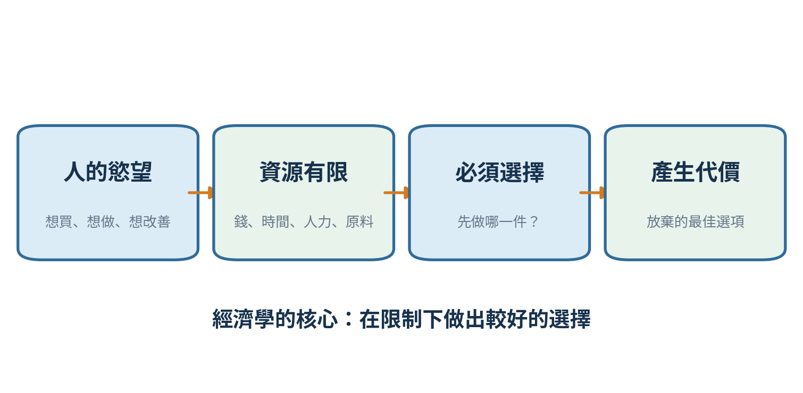
適合：第一次接觸經濟學、管理者、企業主管與自學者
第 0 單元｜如何使用這套課程
先理解，再畫圖，再計算，最後用在真實決策。
| 學完本單元，你能夠｜用自己的話解釋核心概念、看懂基本圖表，並把概念套用到家庭與工廠決策。 |
|---|
經濟學最重要的不是背誦，而是學會辨認：誰在選擇、受到什麼限制、付出什麼代價、行為會如何改變，以及最後誰得利、誰承擔成本。
| 建議學法｜每次只學一個單元，先讀生活故事，再看圖，最後作答。答錯不代表沒學會；能說出「為什麼錯」才是真正掌握。 |
|---|
| 單元 | 主題 | 你會學到 |
|---|---|---|
| 1 | 經濟思維 | 稀缺、選擇、機會成本、邊際思考 |
| 2 | 需求 | 消費者為何買多或買少 |
| 3 | 供給 | 企業為何願意生產 |
| 4 | 市場均衡 | 價格如何形成、短缺與剩餘 |
| 5 | 彈性 | 對價格變動有多敏感 |
| 6 | 消費者選擇 | 預算、效用與邊際效用 |
| 7 | 企業成本 | 固定成本、變動成本、利潤與停產 |
| 8 | 市場結構 | 競爭、壟斷與寡占 |
| 9 | 市場失靈 | 污染、公共財、資訊不對稱 |
| 10 | 總體經濟 | GDP、景氣、失業與通膨 |
| 11 | 政府與銀行 | 財政政策、貨幣政策、利率 |
| 12 | 國際經濟 | 比較利益、關稅、匯率 |
| 13 | 管理應用 | 把經濟學用於工廠決策 |
只需要四則運算、百分比與看懂座標圖。課程中的公式都會先用中文解釋，再用數字示範。看懂「關係」比背公式重要。
第 目錄 單元｜課程導覽
可依順序學習，也可直接跳到工作上需要的單元。
| 學完本單元，你能夠｜用自己的話解釋核心概念、看懂基本圖表，並把概念套用到家庭與工廠決策。 |
|---|
第 1 單元 經濟思維：資源有限，選擇就有代價
第 2 單元 需求：價格與購買量的關係
第 3 單元 供給：成本、價格與生產意願
第 4 單元 市場均衡與政府干預
第 5 單元 彈性：價格一變，數量變多少
第 6 單元 消費者選擇與預算限制
第 7 單元 企業生產、成本與利潤
第 8 單元 不同市場結構
第 9 單元 市場失靈與政府角色
第 10 單元 GDP、景氣、失業與通膨
第 11 單元 財政政策、貨幣政策與銀行
第 12 單元 國際貿易、關稅與匯率
第 13 單元 工廠管理綜合應用
第 1 單元｜經濟思維：資源有限，選擇就有代價
先學會「怎麼想」，再學市場與公式。
| 學完本單元，你能夠｜用自己的話解釋核心概念、看懂基本圖表，並把概念套用到家庭與工廠決策。 |
|---|
經濟學研究人在資源有限時如何作選擇。資源包括金錢、時間、人力、土地、機器、原料與資訊。因為資源不能同時滿足所有需要，所以家庭、企業與政府都必須排序。
圖1-1 稀缺如何迫使人做選擇
| 核心名詞｜稀缺（Scarcity）不是「完全沒有」，而是現有資源不足以滿足全部慾望。 |
|---|
機會成本是做出選擇時，被放棄的最佳替代方案。它不一定是錢，也可能是時間、休息、家庭相處或另一張訂單的利潤。
| 決策 | 選擇 | 被放棄的最佳選項 | 機會成本 |
|---|---|---|---|
| 週日安排 | 陪家人 | 加班可賺50美元 | 50美元及加班帶來的價值 |
| 排產 | 先做圍裙 | 同一條線可做成衣 | 被放棄的成衣貢獻 |
| 買機器 | 購買自動設備 | 資金可作其他投資 | 其他投資的最佳回報 |
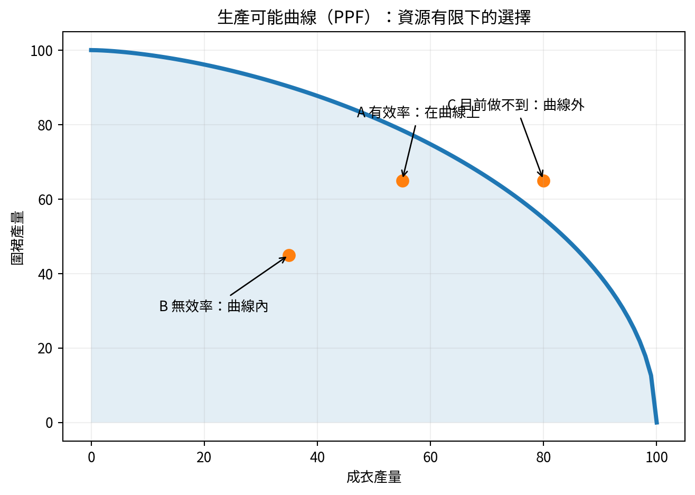
圖1-2 生產可能曲線：多做一種產品通常要少做另一種
| 沉沒成本｜已經發生且無法收回的成本。未來決策應比較「從現在開始」的新增利益與新增成本。 |
|---|
例如一套系統已花5萬美元，但繼續開發還需3萬美元，而且預估只帶來1萬美元價值。前面的5萬美元已經收不回，真正應比較的是未來再花3萬是否值得。
| 邊際思考｜不要只問「做不做」，而要問「再多做一點值不值得」。只要新增利益大於新增成本，通常可以增加；反之應停止。 |
|---|
誘因是會改變行為的獎勵或代價。只按產量發獎金，可能提高速度，也可能造成漏檢與返工。制度設計要同時考慮產量、品質、安全與交期。
1. 免費電影票真的沒有成本嗎？請用機會成本回答。
作答：____________________________________________________________
2. 一張訂單已投入很多開發費，但繼續生產會擴大虧損，過去投入應如何看待？
作答：____________________________________________________________
3. 多加班1小時可增加收入1,500美元，新增工資、電費、返工風險共1,250美元，是否值得？
作答：____________________________________________________________
1. 不一定。票價可能是零，但仍占用時間；被放棄的最佳用途就是機會成本。
2. 若已無法收回，屬於沉沒成本，不應單獨成為繼續生產的理由。
3. 在未考慮其他風險下，邊際利益大於邊際成本250美元，可考慮加班。
第 2 單元｜需求：價格與購買量的關係
站在買方角度理解市場。
| 學完本單元，你能夠｜用自己的話解釋核心概念、看懂基本圖表，並把概念套用到家庭與工廠決策。 |
|---|
需求（Demand）是消費者在某段期間、各種價格下「願意而且有能力」購買的數量。只想要但付不起，不算有效需求。
| 咖啡價格 | 每天願買杯數 |
|---|---|
| $1 | 4杯 |
| $2 | 3杯 |
| $3 | 2杯 |
| $4 | 1杯 |
| 需求法則｜其他條件不變時，價格上升，需求量通常下降；價格下降，需求量通常上升。 |
|---|
| 情況 | 圖上如何表現 | 例子 |
|---|---|---|
| 商品本身價格改變 | 沿同一條需求曲線移動 | 咖啡從3美元降到2美元 |
| 收入、偏好、人口等改變 | 整條需求曲線移動 | 天氣變熱，冰飲在每個價格都賣更多 |
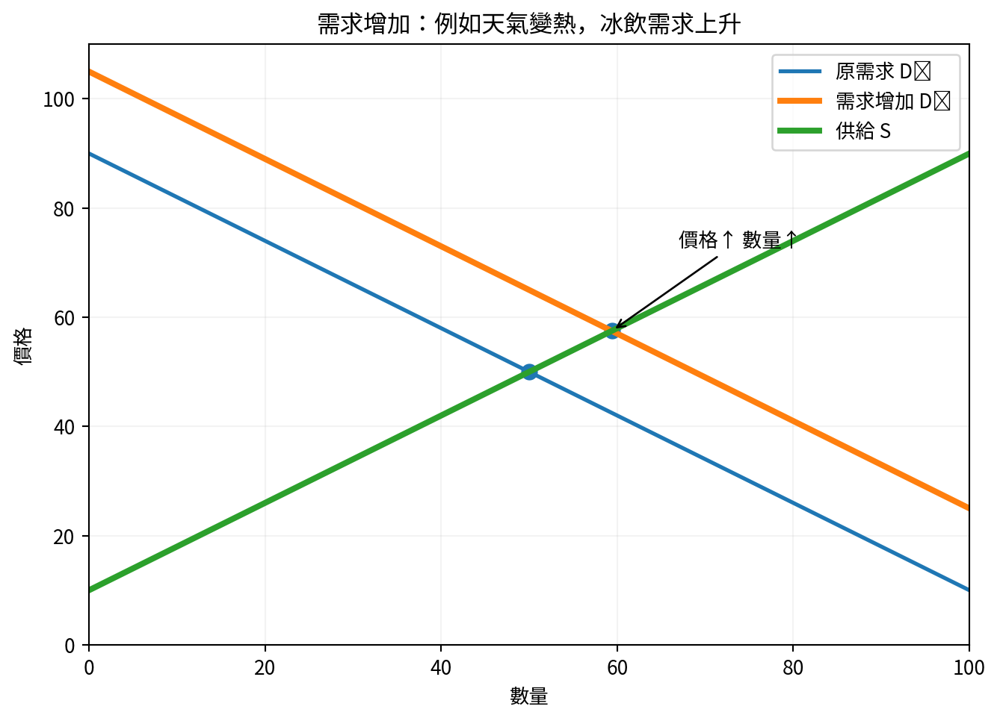
圖2-1 需求增加會使整條需求曲線向右移
收入：一般商品通常隨收入增加而需求增加。
偏好：流行、健康觀念、品牌形象會改變購買意願。
相關商品價格：替代品與互補品會互相影響。
預期：預期未來漲價，現在可能提前購買。
買方人數：人口或客戶數增加，市場需求通常增加。
| 替代品｜可以互相取代的商品，例如咖啡與茶。咖啡漲價可能使茶的需求增加。 |
|---|
| 互補品｜通常一起使用的商品，例如汽車與汽油。汽車銷量下降可能使汽油需求下降。 |
|---|
客戶詢價增加不等於有效需求。有效需求還要看價格、交期、品質條件、付款能力與正式PO。業務預測應區分詢價、樣品、預計訂單與已確認訂單。
1. 天氣突然變熱，冰飲在所有價格下都賣得更多，這是需求量變動還是需求變動？
作答：____________________________________________________________
2. 茶與咖啡是替代品。咖啡價格上升，茶的需求通常如何？
作答：____________________________________________________________
3. 客戶說有興趣但沒有預算，算不算有效需求？
作答：____________________________________________________________
1. 需求變動，整條曲線向右移。
2. 茶的需求通常增加。
3. 不算；需求必須同時具有購買意願與購買能力。
第 3 單元｜供給：成本、價格與生產意願
站在賣方與工廠角度理解市場。
| 學完本單元，你能夠｜用自己的話解釋核心概念、看懂基本圖表，並把概念套用到家庭與工廠決策。 |
|---|
供給（Supply）是生產者在某段期間、各種價格下願意且能夠出售的數量。一般而言，售價越高，能覆蓋的成本越多，企業越願意生產。
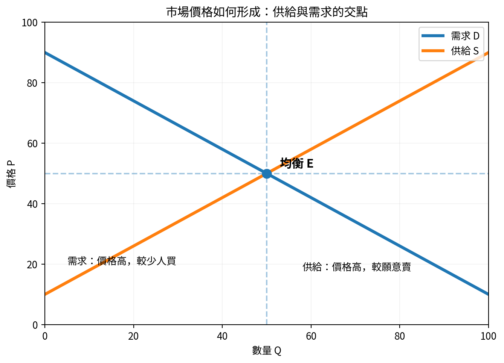
圖3-1 供給向上、需求向下，交點形成均衡
| 情況 | 圖上表現 | 例子 |
|---|---|---|
| 商品本身價格改變 | 沿同一供給曲線移動 | 圍裙報價提高，工廠願意接更多量 |
| 投入成本或技術改變 | 整條供給曲線移動 | 布價下降，使各價格下都能供應更多 |
原料、工資、能源與運費成本。
生產技術與自動化程度。
生產者數量與可用產能。
稅、補貼與法規要求。
對未來價格與需求的預期。
天氣、疫情、港口、戰爭等供應衝擊。
有效供給量同時受到人力、技能、SAM、效率、物料齊套率、品質、換款時間、設備與工作天影響。任何一項成為瓶頸，理論產能就不能轉化為可交貨產能。
| 瓶頸（Bottleneck）｜限制整體產出的最慢環節。改善非瓶頸可能只增加在製品，不一定增加最終產量。 |
|---|
1. 布料價格下降，其他條件不變，成衣供給曲線通常如何移動？
作答：____________________________________________________________
2. 商品售價上升導致廠商願意生產更多，是供給變動還是供給量變動？
作答：____________________________________________________________
3. 工廠有足夠機台但缺熟練車工，機台數能否代表有效供給？
作答：____________________________________________________________
1. 向右移，表示每個價格下供給增加。
2. 供給量變動，是沿原供給曲線移動。
3. 不能；熟練人力是瓶頸，有效供給仍受限制。
第 4 單元｜市場均衡與政府干預
理解價格為何上升、下降，以及限價可能造成什麼。
| 學完本單元，你能夠｜用自己的話解釋核心概念、看懂基本圖表，並把概念套用到家庭與工廠決策。 |
|---|
當買方想買的數量等於賣方願賣的數量，市場達到均衡。均衡不是永遠不變，而是當前條件下暫時沒有強烈上漲或下跌壓力。
圖4-1 供需交點就是市場均衡
| 市場狀態 | 發生原因 | 價格壓力 |
|---|---|---|
| 短缺 | 價格低於均衡，想買的多、願賣的少 | 價格上升 |
| 剩餘 | 價格高於均衡，願賣的多、想買的少 | 價格下降 |
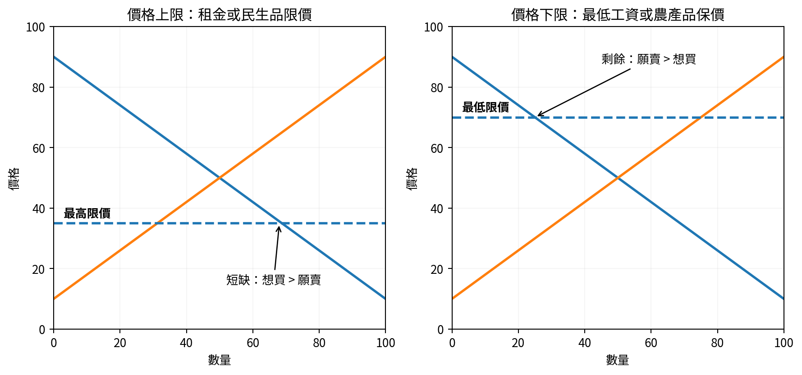
圖4-2 政府限價可能產生短缺或剩餘
價格上限若低於均衡價，可能保護買方，但也可能造成缺貨、排隊、黑市與品質下降。價格下限若高於均衡價，可能保護賣方或勞工，但也可能造成供給過剩或就業減少。
| 判斷政策的方式｜先問政策改變了誰的價格，再看買方與賣方如何反應，最後檢查是否出現短缺、剩餘或轉嫁。 |
|---|
法律規定由企業繳稅，不代表企業承擔全部成本。企業可能提高售價、壓低供應商價格或降低工資。真正由誰承擔，取決於買賣雙方的價格敏感度。
1. 市場價格低於均衡價時通常出現短缺還是剩餘？
作答：____________________________________________________________
2. 最高租金若低於市場均衡租金，可能出現哪些副作用？
作答：____________________________________________________________
3. 政府向企業課稅，是否一定由企業承擔全部稅負？
作答：____________________________________________________________
1. 短缺。
2. 可能出現房源減少、排隊、黑市、維修品質下降等。
3. 不一定；可能透過價格、工資或供應商議價轉嫁。
第 5 單元｜彈性：價格一變，數量變多少
不只判斷方向，還要判斷反應大小。
| 學完本單元，你能夠｜用自己的話解釋核心概念、看懂基本圖表，並把概念套用到家庭與工廠決策。 |
|---|
需求價格彈性衡量價格變動1%時，需求量大約變動多少%。彈性大，表示消費者很敏感；彈性小，表示不太敏感。
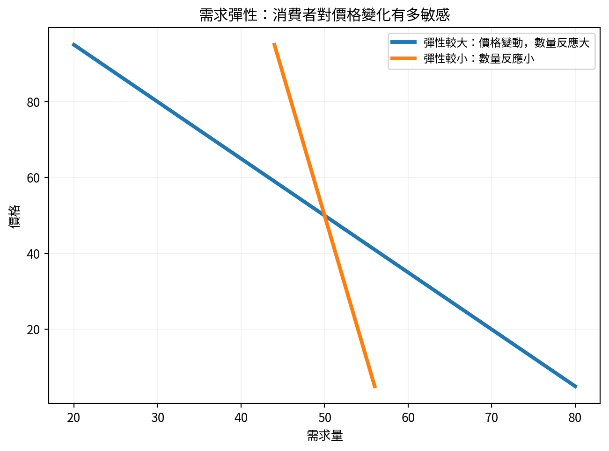
圖5-1 同樣的價格變化，不同商品的數量反應不同
| 簡化公式｜需求彈性 = 需求量變動百分比 ÷ 價格變動百分比。通常取絕對值方便比較。 |
|---|
| 彈性較大 | 彈性較小 |
|---|---|
| 替代品很多 | 替代品少 |
| 非必要品 | 生活必需品 |
| 占預算比重大 | 占預算比重小 |
| 消費者有時間調整 | 短期難調整 |
總收入＝價格×銷量。若需求有彈性，降價帶來的銷量增加可能大於單價下降，總收入反而增加；若需求缺乏彈性，漲價可能使總收入增加。
| 情況 | 價格變化 | 數量變化 | 總收入 |
|---|---|---|---|
| 有彈性 | 價格下降10% | 數量增加20% | 通常增加 |
| 缺乏彈性 | 價格上升10% | 數量只減少3% | 通常增加 |
客戶有很多替代供應商時，工廠報價彈性較大，漲價容易流失訂單。若產品有特殊認證、穩定品質、短交期或難替代技術，客戶的價格敏感度可能較低。
1. 食鹽漲價10%，購買量只下降1%，需求屬於彈性大還是小？
作答：____________________________________________________________
2. 某商品降價5%，銷量增加15%，總收入大致會增加還是減少？
作答：____________________________________________________________
3. 產品差異化為何可能降低客戶的價格敏感度？
作答：____________________________________________________________
1. 彈性小，屬於缺乏彈性。
2. 通常增加，因銷量增幅大於價格降幅。
3. 差異化使替代品減少，客戶較難立即轉單。
第 6 單元｜消費者選擇與預算限制
有限收入下，如何分配才最滿意。
| 學完本單元，你能夠｜用自己的話解釋核心概念、看懂基本圖表，並把概念套用到家庭與工廠決策。 |
|---|
預算線表示在收入與價格給定時，消費者能買到的兩種商品組合。收入增加會使預算線向外平移；某商品降價會使預算線以另一軸截距為支點向外旋轉。
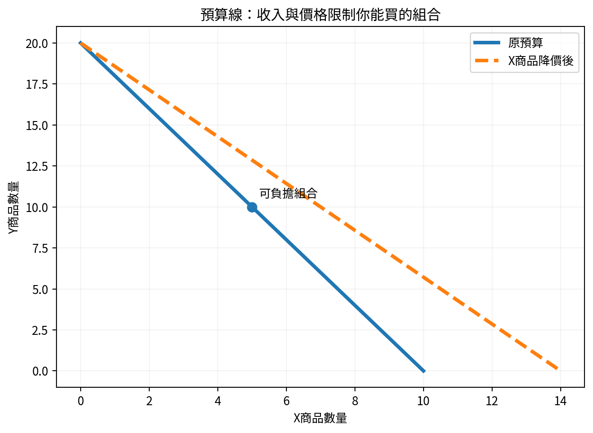
圖6-1 X商品降價後，可以購買更多X
效用可以理解為滿足感。邊際效用是多消費一單位帶來的額外滿足。第一杯水對口渴的人很重要，第二杯仍有價值，到了第五杯可能幾乎沒有額外滿足，這就是邊際效用遞減。
| 飲用杯數 | 總滿足感 | 多一杯增加的滿足 |
|---|---|---|
| 1 | 50 | 50 |
| 2 | 85 | 35 |
| 3 | 105 | 20 |
| 4 | 112 | 7 |
| 5 | 112 | 0 |
把每一美元花在「每元帶來的邊際效用」較高的地方。當不同用途的每元邊際效用大致相等時，通常已接近較好的分配。
| 管理類比｜預算分配也可套用到工廠改善：先投資每1美元能降低最多損失或增加最多產出的項目。 |
|---|
1. 收入增加、價格不變，預算線如何變化？
作答：____________________________________________________________
2. 為什麼吃第一塊披薩通常比第五塊帶來更多額外滿足？
作答：____________________________________________________________
3. 工廠改善預算有限，應優先投資哪類專案？
作答：____________________________________________________________
1. 整條向外平移，可負擔組合增加。
2. 因為邊際效用通常遞減。
3. 優先投資每單位預算能帶來較大效益的專案。
第 7 單元｜企業生產、成本與利潤
看懂產量增加是否真的比較賺。
| 學完本單元，你能夠｜用自己的話解釋核心概念、看懂基本圖表，並把概念套用到家庭與工廠決策。 |
|---|
| 成本類型 | 是否隨短期產量變動 | 例子 |
|---|---|---|
| 固定成本 | 短期內不隨產量變化 | 廠租、部分管理薪資、折舊 |
| 變動成本 | 產量增加通常增加 | 布料、線、包材、計件工資 |
| 總成本 | 固定成本＋變動成本 | 所有生產成本合計 |
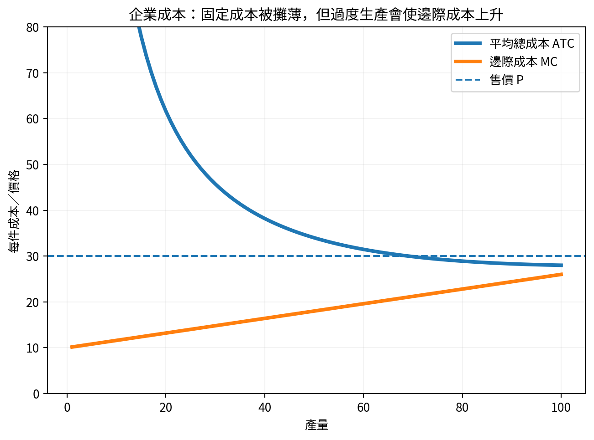
圖7-1 平均成本與邊際成本的基本關係
固定成本會隨產量增加而被攤薄，但當工廠接近滿負荷，可能出現加班、故障、返工、換線混亂與管理負荷，使新增一件的成本上升。
| 概念 | 計算方式 | 用途 |
|---|---|---|
| 會計利潤 | 收入－明確支付的會計成本 | 財務報表 |
| 經濟利潤 | 收入－會計成本－機會成本 | 比較資源是否用在最佳用途 |
短期接單不能只看平均成本。若工廠有閒置產能，價格只要高於新增變動成本，可能對固定成本有貢獻；但若急單排擠高毛利訂單、增加空運或品質風險，就必須把機會成本算進去。
| 貢獻毛益｜售價減去變動成本。它先用來支付固定成本，超過固定成本後才形成利潤。 |
|---|
1. 廠房租金短期內屬於固定成本還是變動成本？
作答：____________________________________________________________
2. 接急單時只要售價高於材料成本就一定值得嗎？
作答：____________________________________________________________
3. 經濟利潤為何通常低於會計利潤？
作答：____________________________________________________________
1. 固定成本。
2. 不一定，還要計入加班、品質、空運、排擠其他訂單等新增成本與機會成本。
3. 因為經濟利潤還扣除自有資源的機會成本。
第 8 單元｜不同市場結構
企業能不能自由定價，取決於競爭環境。
| 學完本單元，你能夠｜用自己的話解釋核心概念、看懂基本圖表，並把概念套用到家庭與工廠決策。 |
|---|
| 市場結構 | 賣方數量 | 產品差異 | 進入障礙 | 例子 |
|---|---|---|---|---|
| 完全競爭 | 很多 | 很小 | 低 | 標準化農產品的理想模型 |
| 獨占競爭 | 很多 | 有差異 | 相對低 | 餐廳、服飾品牌 |
| 寡占 | 少數大型企業 | 可能有 | 高 | 電信、航空、晶片 |
| 壟斷 | 一個主要供應者 | 無近似替代品 | 很高 | 部分公用事業 |
產品差異化：設計、品質、服務、品牌與認證。
轉換成本：客戶更換供應商需要重新測試、驗廠或開模。
規模經濟：大型企業平均成本更低。
法規、專利、資源控制與網路效應。
寡占企業作決策時必須預測競爭者反應。降價可能引發價格戰；擴產可能使市場供過於求。這類互相影響的決策稱為策略互動。
若各工廠提供的產品看起來完全相同，客戶容易只比價格。縮短交期、提高準交率、降低客訴、具備GRS或特定測試能力、提供數據可視化與快速開發，能增加差異化。
1. 餐廳很多但口味、地點與服務不同，較接近哪種市場？
作答：____________________________________________________________
2. 壟斷企業是否可以無限制提高價格？
作答：____________________________________________________________
3. 代工廠如何降低客戶只比較單價的情況？
作答：____________________________________________________________
1. 獨占競爭。
2. 不能；仍受需求、替代方式、法規與消費者承受能力限制。
3. 建立品質、交期、認證、開發速度與服務等差異化。
第 9 單元｜市場失靈與政府角色
自由交易有時無法把所有成本與利益算進價格。
| 學完本單元，你能夠｜用自己的話解釋核心概念、看懂基本圖表，並把概念套用到家庭與工廠決策。 |
|---|
外部性是交易或生產對第三方造成影響，但沒有完整反映在市場價格中。污染是負外部性；疫苗、教育或植樹可能產生正外部性。
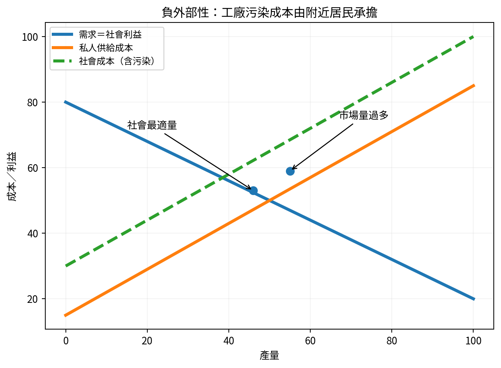
圖9-1 污染使社會真正成本高於企業私人成本
公共財通常具有非排他性與非競爭性。非排他表示很難阻止沒付費者使用；非競爭表示一人使用不明顯減少他人使用。國防、路燈與部分防洪設施是常見例子。
| 搭便車問題｜人可以享受利益卻不付費，私人市場可能因此供應不足。 |
|---|
交易雙方掌握的資訊不同，可能造成不良選擇與道德風險。例如供應商比客戶更清楚材料缺陷；員工投保後可能降低防範風險的動機。
| 工具 | 作用 | 可能副作用 |
|---|---|---|
| 稅 | 讓污染者承擔更多社會成本 | 計算困難、可能轉嫁 |
| 補貼 | 鼓勵具有社會利益的活動 | 財政負擔、被濫用 |
| 規範與標準 | 直接限制危險行為 | 執法成本、過度僵化 |
| 資訊揭露 | 降低資訊不對稱 | 資料可能太複雜或造假 |
1. 工廠排污影響附近居民，為何市場價格可能太低？
作答：____________________________________________________________
2. 路燈為何容易出現搭便車？
作答：____________________________________________________________
3. 第三方驗廠與產品測試主要在改善哪種市場失靈？
作答：____________________________________________________________
1. 因企業私人成本沒有完整包含居民承擔的健康與環境成本。
2. 很難只讓付費者使用，沒付費者也能享受。
3. 資訊不對稱，透過外部查證提高可信度。
第 10 單元｜GDP、景氣、失業與通膨
從單一市場進入整體經濟。
| 學完本單元，你能夠｜用自己的話解釋核心概念、看懂基本圖表，並把概念套用到家庭與工廠決策。 |
|---|
| 微觀經濟學 | 總體經濟學 |
|---|---|
| 研究家庭、企業與單一市場 | 研究全國產出、物價、失業與成長 |
| 例：咖啡價格、工廠成本 | 例：GDP、通膨率、失業率 |
GDP（國內生產毛額）是一段期間內，一國境內生產的最終商品與服務的市場價值。它衡量生產活動，不直接等於幸福、收入公平或環境品質。
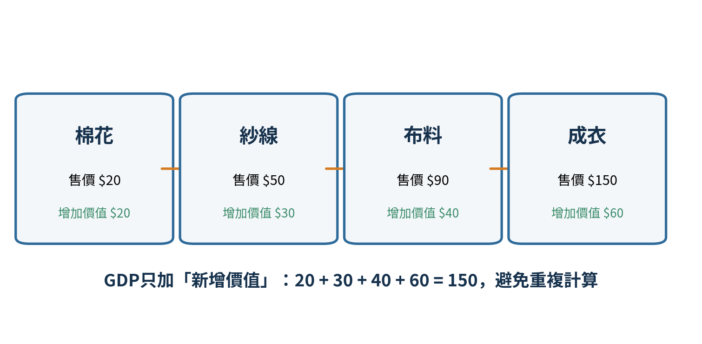
圖10-1 用增加價值避免GDP重複計算
| 支出法｜GDP = 消費 C + 投資 I + 政府購買 G + 淨出口（出口 X－進口 M）。 |
|---|
名目GDP同時受到價格與產量影響；實質GDP扣除價格變動，更適合比較不同年份的實際生產量。
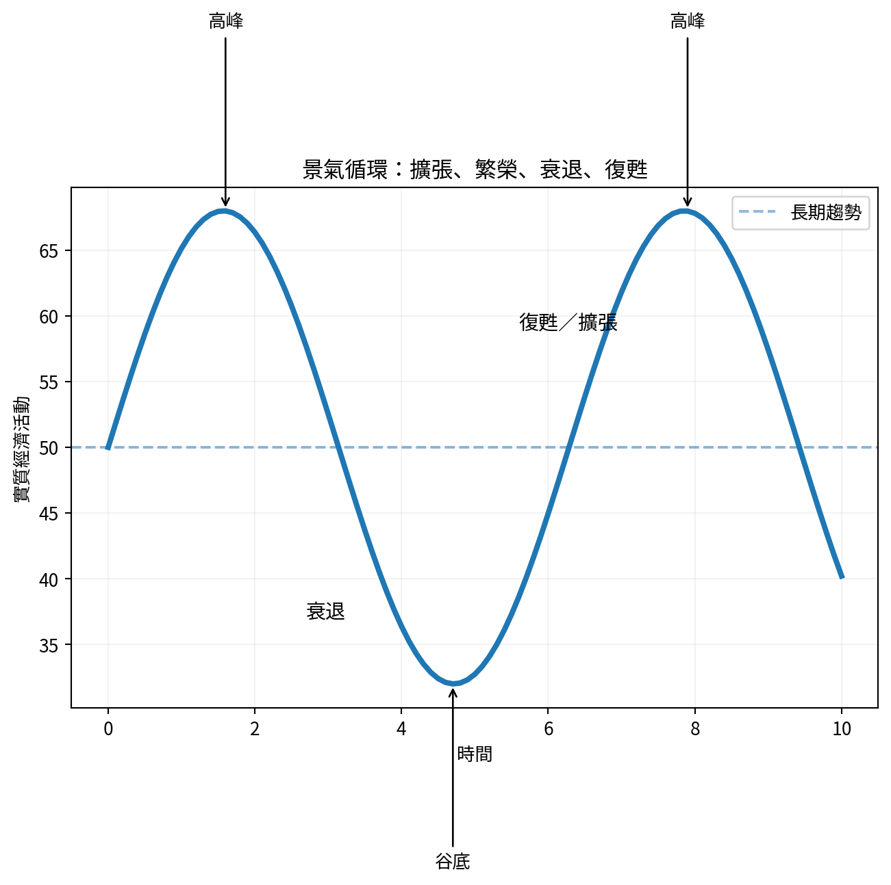
圖10-2 經濟活動不會每年平穩直線成長
| 概念 | 簡單定義 | 注意事項 |
|---|---|---|
| 失業率 | 勞動人口中想工作、能工作但沒有工作者的比例 | 不找工作者不一定計入勞動人口 |
| 通膨 | 整體物價持續普遍上升 | 單一商品漲價不等於通膨 |
| 通縮 | 整體物價持續下降 | 可能使消費延後、債務實質負擔上升 |
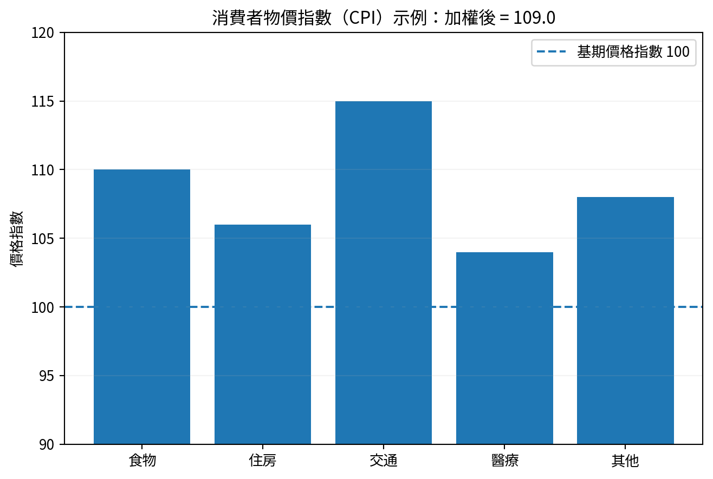
圖10-3 CPI用不同消費項目的權重計算平均物價
1. 二手車買賣是否計入當年GDP？
作答：____________________________________________________________
2. 物價上升10%、產量不變，名目GDP與實質GDP如何變化？
作答：____________________________________________________________
3. 一種蔬菜因歉收漲價，是否一定代表通膨？
作答：____________________________________________________________
1. 通常不計入車輛本身，因已在生產年份計入；當年的仲介服務可計入。
2. 名目GDP上升，實質GDP大致不變。
3. 不一定；通膨是整體物價持續普遍上升。
第 11 單元｜財政政策、貨幣政策與銀行
理解政府支出、利率與信用如何影響景氣。
| 學完本單元，你能夠｜用自己的話解釋核心概念、看懂基本圖表，並把概念套用到家庭與工廠決策。 |
|---|
財政政策由政府透過支出與稅收影響總需求。景氣低迷時增加公共投資或減稅，可能刺激需求；景氣過熱時減少支出或增稅，可能抑制通膨。
| 政策方向 | 常見工具 | 可能影響 |
|---|---|---|
| 擴張性財政政策 | 增加政府支出、減稅 | 需求與就業上升，但赤字可能擴大 |
| 緊縮性財政政策 | 減少支出、增稅 | 抑制通膨，但短期成長可能放慢 |
中央銀行透過政策利率、公開市場操作與準備金等工具影響金融條件。利率下降通常使借款較便宜，刺激消費與投資；利率上升則相反。政策效果具有時間差，也不保證每次相同。
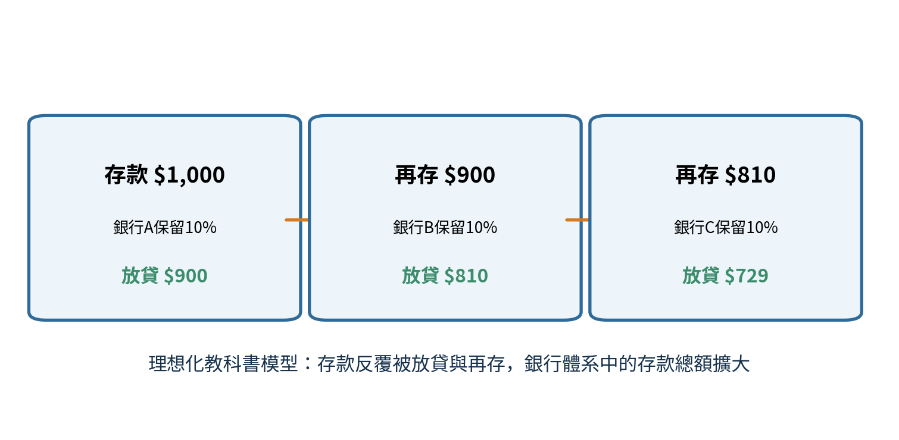
圖11-1 理想化存款乘數模型
現實銀行放貸還受資本規範、借款需求、信用風險、流動性與央行政策影響，因此不能只用1÷準備率預測實際貨幣量。
利率上升：貸款、設備融資與庫存資金成本提高。
利率下降：投資門檻降低，但也可能推高資產價格。
信用緊縮：即使有訂單，企業也可能缺乏週轉資金。
通膨與升息：同時影響工資、原料、匯率與客戶需求。
1. 政府增加公共建設支出屬於哪類政策？
作答：____________________________________________________________
2. 中央銀行升息通常會使借款成本如何變化？
作答：____________________________________________________________
3. 準備率10%是否代表現實存款一定擴大10倍？
作答：____________________________________________________________
1. 擴張性財政政策。
2. 上升，消費與投資通常受到抑制。
3. 不一定；10倍只是理想化上限，現實還受多項條件限制。
第 12 單元｜國際貿易、關稅與匯率
理解為何專業分工能互利，以及匯率如何影響工廠。
| 學完本單元，你能夠｜用自己的話解釋核心概念、看懂基本圖表，並把概念套用到家庭與工廠決策。 |
|---|
絕對利益看誰用較少資源生產更多；比較利益看誰生產某商品時放棄的其他商品較少。即使一方所有產品都更有效率，雙方仍可能因比較利益而透過分工與交易受益。
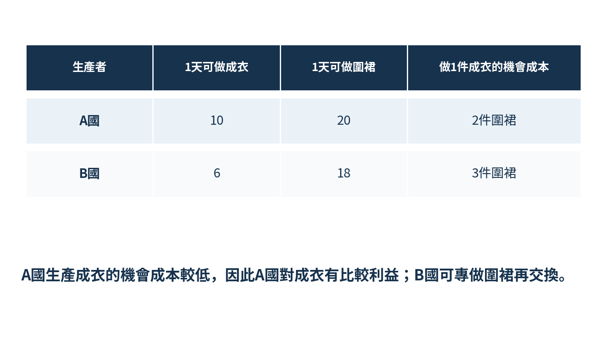
圖12-1 比較利益看的是機會成本，不只看誰產量高
| 可能利益 | 可能代價 |
|---|---|
| 更多選擇、更低價格 | 部分產業與勞工受到競爭衝擊 |
| 專業分工提高總產出 | 供應鏈依賴與地緣風險 |
| 取得本國難以生產的資源 | 利益分配不平均 |
關稅是對進口商品課稅，通常提高國內價格、保護部分本國生產者，但也增加消費者與使用進口原料企業的成本。配額直接限制進口數量，可能造成配額租。
匯率是一種貨幣用另一種貨幣表示的價格。美元升值或貶值的影響取決於企業的收入幣別、成本幣別、債務幣別與合約條款。
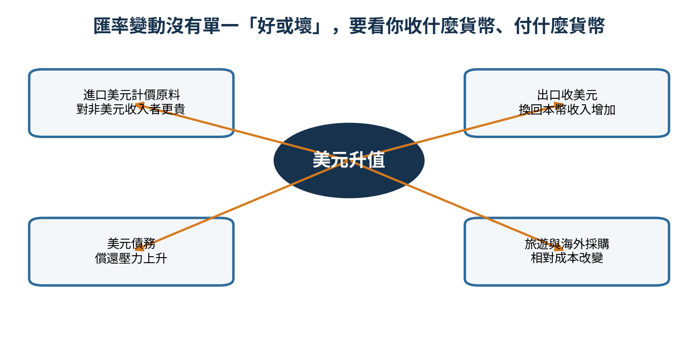
圖12-2 匯率影響要從收款、付款與負債三面分析
| 自然避險｜收入與支出使用相同貨幣，匯率波動的淨影響會降低。例如收美元、主要原料也付美元。 |
|---|
1. 比較利益是比較產量還是機會成本？
作答：____________________________________________________________
2. 進口關稅可能同時保護誰、傷害誰？
作答：____________________________________________________________
3. 收美元、付美元的企業為何匯率風險可能較低？
作答：____________________________________________________________
1. 比較機會成本。
2. 可能保護本國競爭產業，但傷害消費者與使用進口原料的下游企業。
3. 因收入與支出部分互相抵銷，形成自然避險。
第 13 單元｜工廠管理綜合應用
把經濟學從考題變成決策工具。
| 學完本單元，你能夠｜用自己的話解釋核心概念、看懂基本圖表，並把概念套用到家庭與工廠決策。 |
|---|
工廠不能只比較「停工會損失工資」與「不停工比較好看」。應列出不同方案的邊際成本、機會成本、交期影響、品質風險與員工穩定性。
| 方案 | 直接成本 | 機會成本／風險 | 可能適用情況 |
|---|---|---|---|
| 全員待工 | 工資、能源、管理成本 | 員工時間未轉化為產出 | 物料1－2天內確定到廠 |
| 部分停工 | 半薪、重排成本 | 部分產能無法使用 | 可把有限物料集中到少數線 |
| 轉做其他單 | 換線、學習、品質成本 | 排擠原訂單 | 替代訂單物料齊全且交期合理 |
| 培訓／保養 | 培訓與停機成本 | 短期無產量 | 長期效率與設備可靠性有明確改善 |
計算急單的新增收入。
計算材料、工資、加班、空運、返工與換線等新增成本。
計算排擠其他訂單的機會成本。
評估交期、客戶關係、現金流與後續訂單價值。
作情境分析：最好、正常、最差。
只獎勵產量會改變誘因，可能造成品質與安全成本轉移到其他部門。較完整的制度可同時設定產量、效率、一次合格率、返工率、交期與安全底線。
| 問題 | 用途 |
|---|---|
| 限制是什麼？ | 資金、人力、時間、物料、產能或資訊 |
| 最佳替代方案是什麼？ | 辨認機會成本 |
| 哪些成本已無法收回？ | 避免沉沒成本謬誤 |
| 多做一點的新增利益與成本？ | 使用邊際分析 |
| 制度會鼓勵什麼行為？ | 檢查誘因與非預期後果 |
| 誰可能承擔未計價成本？ | 檢查外部性 |
| 需求對價格多敏感？ | 估計彈性 |
| 短期與長期結果是否不同？ | 避免只看眼前 |
某工廠收到100,000件急單，單價比正常低8%。現有產能已使用90%，接單需要兩週加班並可能延後一張高毛利訂單。布料需美元付款，客戶也以美元付款。請用以下架構分析：
需求與競爭：客戶是否容易轉單？工廠是否有差異化？
邊際分析：急單新增收入與所有新增成本。
機會成本：被延後訂單的毛利、罰款與客戶關係。
供給限制：人力、物料、機台、品質與瓶頸。
匯率：美元收入與美元原料是否形成自然避險。
風險情境：正常效率、效率下降、返工增加、空運發生。
| 結業判準｜能用上述架構說明「為何接」或「為何不接」，而不是只說有單就做或單價低就不做，代表你已具備初級經濟學的實際分析能力。 |
|---|
第 附錄A 單元｜常用公式與名詞速查
看得懂、會套用即可，不要求死背。
| 學完本單元，你能夠｜用自己的話解釋核心概念、看懂基本圖表，並把概念套用到家庭與工廠決策。 |
|---|
| 概念 | 公式／判斷 | 白話解釋 |
|---|---|---|
| 總收入 | 價格 × 數量 | 賣出商品收到的收入 |
| 利潤 | 總收入－總成本 | 扣除成本後剩餘 |
| 貢獻毛益 | 售價－單位變動成本 | 每件對固定成本與利潤的貢獻 |
| 需求彈性 | 數量變動% ÷ 價格變動% | 價格變化時，消費者反應多大 |
| 失業率 | 失業人口 ÷ 勞動人口 | 想工作卻沒有工作者的比例 |
| 通膨率 | 物價指數年增率 | 整體物價上升速度 |
| GDP支出法 | C＋I＋G＋X－M | 消費、投資、政府購買、淨出口 |
| 機會成本 | 放棄的最佳替代方案 | 選擇真正犧牲的價值 |
| 英文 | 中文 |
|---|---|
| Scarcity | 稀缺 |
| Opportunity Cost | 機會成本 |
| Marginal Benefit / Cost | 邊際利益／邊際成本 |
| Demand / Supply | 需求／供給 |
| Equilibrium | 均衡 |
| Elasticity | 彈性 |
| Utility | 效用 |
| Fixed / Variable Cost | 固定／變動成本 |
| Externality | 外部性 |
| GDP | 國內生產毛額 |
| Inflation | 通膨 |
| Fiscal Policy | 財政政策 |
| Monetary Policy | 貨幣政策 |
| Comparative Advantage | 比較利益 |
| Exchange Rate | 匯率 |
第 附錄B 單元｜30天自學進度表
每天20－30分鐘，先完成再追求完美。
| 學完本單元，你能夠｜用自己的話解釋核心概念、看懂基本圖表，並把概念套用到家庭與工廠決策。 |
|---|
| 天數 | 內容 | 進度 | 學習紀錄 |
|---|---|---|---|
| 1 | 單元1：經濟思維 | □完成 | 一句話心得：________________ |
| 2 | 單元1：經濟思維 | □完成 | 一句話心得：________________ |
| 3 | 單元2：需求 | □完成 | 一句話心得：________________ |
| 4 | 單元2：需求 | □完成 | 一句話心得：________________ |
| 5 | 單元3：供給 | □完成 | 一句話心得：________________ |
| 6 | 單元3：供給 | □完成 | 一句話心得：________________ |
| 7 | 單元4：均衡與限價 | □完成 | 一句話心得：________________ |
| 8 | 單元4：均衡與限價 | □完成 | 一句話心得：________________ |
| 9 | 單元5：彈性 | □完成 | 一句話心得：________________ |
| 10 | 單元5：彈性 | □完成 | 一句話心得：________________ |
| 11 | 單元6：消費者選擇 | □完成 | 一句話心得：________________ |
| 12 | 單元6：消費者選擇 | □完成 | 一句話心得：________________ |
| 13 | 單元7：企業成本 | □完成 | 一句話心得：________________ |
| 14 | 單元7：企業成本 | □完成 | 一句話心得：________________ |
| 15 | 單元7：企業成本 | □完成 | 一句話心得：________________ |
| 16 | 單元8：市場結構 | □完成 | 一句話心得：________________ |
| 17 | 單元8：市場結構 | □完成 | 一句話心得：________________ |
| 18 | 單元9：市場失靈 | □完成 | 一句話心得：________________ |
| 19 | 單元9：市場失靈 | □完成 | 一句話心得：________________ |
| 20 | 單元10：GDP、景氣、通膨 | □完成 | 一句話心得：________________ |
| 21 | 單元10：GDP、景氣、通膨 | □完成 | 一句話心得：________________ |
| 22 | 單元10：GDP、景氣、通膨 | □完成 | 一句話心得：________________ |
| 23 | 單元10：GDP、景氣、通膨 | □完成 | 一句話心得：________________ |
| 24 | 單元11：政府、銀行與利率 | □完成 | 一句話心得：________________ |
| 25 | 單元11：政府、銀行與利率 | □完成 | 一句話心得：________________ |
| 26 | 單元11：政府、銀行與利率 | □完成 | 一句話心得：________________ |
| 27 | 單元12：貿易與匯率 | □完成 | 一句話心得：________________ |
| 28 | 單元12：貿易與匯率 | □完成 | 一句話心得：________________ |
| 29 | 單元13：綜合案例與複習 | □完成 | 一句話心得：________________ |
| 30 | 單元13：綜合案例與複習 | □完成 | 一句話心得：________________ |
你已完成初級經濟學的第一輪學習
真正的學會，是能用這套思考方式分析下一個真實問題。
← AC Admin